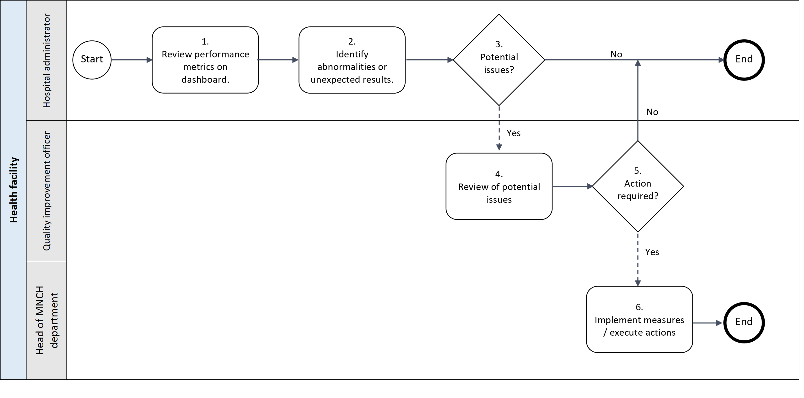

5. Generic business processes and workflows
Business processes
A business process is a set of related activities or tasks performed together to achieve the objectives of the health programme area. Workflows are a visual representation of the progression of activities (tasks, events, interactions) that are performed within the business process. The workflow provides a “story” for the business process being diagrammed and is used to enhance communication and collaboration among users, stakeholders and engineers. This DAK focuses on key business processes conducted by the personas as part of the Value points intervention.
Note: This DAK does not intend to focus on the process of registration of patients and execution of ANC touchpoints, as the main digital system described in this DAK (the dashboard) is not used during these processes. The corresponding business process and workflows have been described in the “Digital Adaptation Kit for Antenatal Care: Operational requirements for implementing WHO recommendations in digital systems”.
Workflows
Workflows represent the progression of activities performed within the business process. They help users and stakeholders understand the relationship between activities, data elements and decision-support needs. The workflows shown depict processes that have been generalized and may not reflect variation and nuances across different settings. Also, the simplicity of the workflow may not adequately illustrate non-linear steps that may occur .
A. Business process for analysis of historic and current performance metrics in the dashboard.
Objective: To monitor the effect of implemented quality improvement interventions

Annotations for the business process for analysis of historic and current performance metrics in the dashboard
General note: For this workflow, it is expected that previously in time the hospital leadership has identified a performance area of weakness and implemented a quality improvement intervention to improve that area of performance. There is no fixed frequency for viewing the performance metrics in the dashboard.
- Review performance metrics on dashboard.
- The hospital administrator checks the dashboard every other week to monitor the activity in the hospital.
- Identify abnormalities or unexpected results.
- Special attention is given to the performance metric which they aim to improve through the quality improvement intervention. The hospital administrator checks whether the expected improvement is achieved / continued.
- Potential issues?
- In case no improvement is seen, or if the improvement is stagnating, for a significant period of time, the administrator will need to discuss this with the quality improvement officer.
- If there are no potential issues identified, there is no follow up action for the administrator.
- Review of potential issues
- The quality improvement officer can further identify the impact of this issue and reasons for why the expected effect is not achieved.
- Action required?
- If the quality improvement officer sees the need, and room, for adjustment of the intervention, a plan for adjustment is made. This plan is communicated to the head of the MNCH department to implement these changes in the daily operation.
- In case the quality improvement officers deems no action need (for example as more time is needed to see the effects of the intervention), there is no immediate follow up action.
- Implement measures / execute actions
- The head of MNCH department ensures the MNCH team is made aware of the adjustments to the intervention and oversees timely execution by the team.
B. Identifying actionable groups of mothers in the dashboard.
Objective: Identifying actionable groups of mothers in the dashboard.
Annotations for the business process for identifying actionable groups of mothers in the dashboard
General note: For this workflow, it is expected that the Head of MNCH department has a clear understanding of volumes of services provided through prior interactions with the dashboard. There is no fixed frequency for identifying actionable groups of mothers, the data updates on a daily basis.
- Review numbers of expected services for coming week.
- At the start of every week, the head of MNCH department checks the dashboard to determine the number of mothers that are eligible for specific services.
- The MNCH nurse can identify which mothers are eligible and very shortly due for the services and reach out to them to ensure they are aware of the next step in their care journeys.
- Identify significant outliers.
- The MNCH department head assesses if the expected volume of services to be provided exceeds the tolerance for the usual volumes, which can be both an decrease or increase of service. If so, he/she needs to assess whether the current resources, both human and equipment, are adequate to cover for the change is volume of service.
- Need for adjustment of resources?
- In case there is adequate human resource and equipment, no adjustment is needed and there is no further action.
- In case adjustment of resources is needed, this is communicated to the Hospital Administrator.
- Identify ability to adjust human capacity and procurement
- The Hospital administrator must determine if the hospital is in the position to make the required adjustments. This includes financial resources, availability of human resources and availability of space.
- Adjustment possible?
- In case the hospital is not in the position to make the adjustments to accommodate for the change in volumes of services, there is no action needed.
- In case of an expected increase in volume of service, the hospital administrator might need to assess alternative ideas to prevent overloading of the hospital that might negatively impact the quality of care. This could for example be diverting patients to other hospitals.
- If they can adjust resources, the instruction is given to the head of MNCH to coordinate the changes.
- Coordinate adjustment with team.
- The head of MNCH department will provide instructions to the MNCH team.
- Implement adjustment.
- The MCNH nurse will implement the changes.